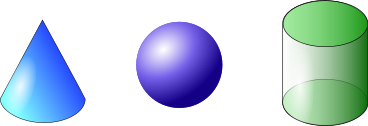
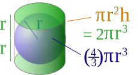
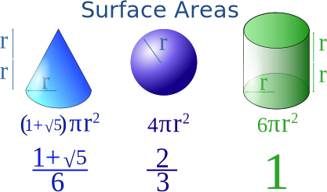
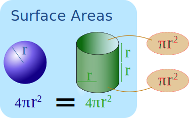
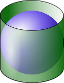

Cone vs Sphere vs Cylinder

Volume of a Cone vs Cylinder
Let's fit a cylinder around a cone.

The volume formulas for cones and cylinders are very similar:
| The volume of a cylinder is: | π × r2 × h |
| The volume of a cone is: | 1 3 π × r2 × h |
So the cone's volume is exactly one third ( 1 3 ) of a cylinder's volume.
(Try to imagine 3 cones fitting inside a cylinder, if you can!)
Volume of a Sphere vs Cylinder
Now let's fit a cylinder around a sphere .
We must now make the cylinder's height 2r so the sphere fits perfectly inside.

| The volume of the cylinder is: | π × r2 × h = 2 π × r3 |
| The volume of the sphere is: | 4 3 π × r3 |
So the sphere's volume is 4 3 vs 2 for the cylinder
Or more simply the sphere's volume is 2 3 of the cylinder's volume!
The Result
And so we get this amazing thing that the volume of a cone and sphere together make a cylinder (assuming they fit each other perfectly, so h=2r):

Isn't mathematics wonderful?
Question: what is the relationship between the volume of a cone and half a sphere (a hemisphere)?
Surface Area
What about their surface areas?

No, it does not work for the cone.
But we do get the same relationship for the sphere and cylinder (2 3 vs 1)
And there is another interesting thing: if we remove the two ends of the cylinder then its surface area is exactly the same as the sphere:

Which means that we could reshape a cylinder (of height 2r and without its ends) to fit perfectly on a sphere (of radius r):

Same Area
(Research "Archimedes' Hat-Box Theorem" to learn more.)